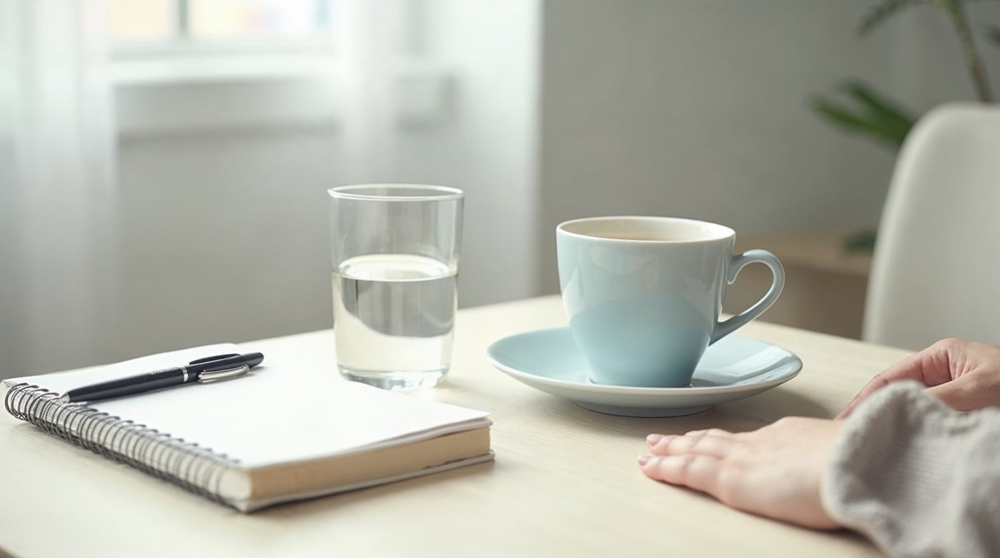

이종호 한의사 감수좋은꿈참사랑한의원 대표원장 (한의사 면허번호 19769)발행 2026-11-26 · 수정 2026-11-26
이 글의 차례
감기 끝에 기침이 터진 순간, 아차 싶습니다. 속옷이 살짝 젖은 느낌에 얼굴이 화끈 달아오릅니다. 그 뒤로는 외출할 때마다 가방에 얇은 패드를 챙기고, 재채기가 나올 것 같으면 다리를 꼬고 몸을 웅크리는 버릇이 생겼습니다.
요실금은 내 뜻과 상관없이 소변이 새어 나오는 것을 말합니다. 출산을 겪은 여성, 갱년기 무렵의 여성에게 특히 흔하지만, 나이와 성별을 가리지 않고 생길 수 있습니다. 그런데도 누구에게 말하기 부끄러워 혼자 패드로 버티는 분이 정말 많습니다.
진료실에서 이런 말씀을 자주 듣습니다. "나이 들면 원래 다 그런 거라던데요." 흔한 것은 맞지만, 당연히 참고 지내야 하는 것은 아닙니다. 웃을 때마다, 계단을 내려갈 때마다 신경을 곤두세우며 지내 오셨다면, 그 하루가 얼마나 조심스러웠을지 짐작이 갑니다.
요실금은 크게 두 갈래로 나눠 봅니다. 배에 힘이 들어갈 때 새는 복압성 요실금, 갑자기 강하게 마려워 화장실까지 참지 못하는 절박성 요실금입니다. 두 가지가 함께 있는 분도 많습니다. 이 글에서는 그 차이를 알아보고, 생활에서 해 볼 수 있는 일들과 한의원에서 함께 살피는 부분을 정리하겠습니다.
왜 소변이 새거나 참기 힘들어질까요
방광은 소변을 모아 두는 주머니이고, 그 아래에는 소변이 나가는 길을 조여 주는 근육이 있습니다. 이 근육을 받쳐 주는 것이 골반 아래를 해먹처럼 가로지르는 골반바닥근입니다. 방광과 자궁, 직장을 아래에서 떠받치며 소변과 대변이 새지 않도록 조절합니다.
평소에는 방광이 차도 뇌가 '아직 아니야' 하고 신호를 눌러 두고, 골반바닥근이 출구를 단단히 잡아 줍니다. 화장실에 도착해 준비가 되면 뇌가 허락을 내리고, 방광이 수축하며 출구 근육이 풀려 소변이 나옵니다. 이 과정 어딘가가 흔들리면 요실금이 생깁니다.
출산은 골반바닥근을 크게 늘이고 지치게 합니다. 폐경 뒤에는 여성 호르몬이 줄어 요도 주변 조직이 얇아지고 탄력이 떨어집니다. 체중이 늘거나, 만성 기침이나 변비로 배에 힘을 자주 주거나, 무거운 것을 자주 드는 일도 골반바닥에 부담을 줍니다.
한의학에서는 소변이 저절로 새는 모습을 유뇨(遺尿)나 소변불금(小便不禁)이라 부르며, 아래쪽을 붙잡아 두는 기운이 약해진 상태로 보아 왔습니다. 특히 신(腎)과 방광의 기운, 아랫배의 따뜻함을 중요하게 여겼습니다. 그래서 저는 아랫배와 허리의 냉기, 몸 전체의 기운을 함께 살핍니다.
두 갈래, 이렇게 나눠 봅니다
복압성 요실금
기침, 재채기, 크게 웃기, 줄넘기, 무거운 물건 들기처럼 배에 갑자기 힘이 들어가는 순간 소변이 찔끔 새는 모습입니다. 마려운 느낌 없이 새는 것이 특징입니다. 출산 뒤나 폐경 무렵 여성에게 가장 흔한 갈래로, 골반바닥근의 힘이 약해진 것과 관련이 깊습니다.
절박성 요실금
갑자기 강하게 마려운 느낌이 몰려와 화장실까지 가는 사이에 새는 모습입니다. 현관문 열쇠를 꽂는 순간, 수돗물 소리를 들을 때 참기 어려워진다는 분이 많습니다. 소변을 자주 보고 밤에도 깨는 과민성 방광과 함께 오는 경우가 많습니다.
두 가지가 함께 있는 혼합형
기침할 때도 새고, 갑자기 마려울 때도 참기 힘든 경우입니다. 생각보다 흔하며, 어느 쪽이 더 불편한지를 먼저 정해 그쪽부터 살핍니다. 배뇨 일기를 써 보면 어느 쪽이 더 큰 몫을 차지하는지 드러납니다.
그 밖의 경우
소변이 방광에 늘 남아 있다가 넘쳐 조금씩 새는 경우, 걷거나 움직이기 어려워 화장실까지 늦게 도착해 새는 경우도 있습니다. 소변 줄기가 약하고 다 본 뒤에도 남은 느낌이 강하다면 비뇨의학과에서 잔뇨를 확인해 보시길 권합니다.
골반바닥 운동, 이렇게 해 봅니다
복압성 요실금에서 가장 먼저 권하는 것이 골반바닥근 운동, 흔히 케겔 운동이라 부르는 것입니다. 꾸준히 하면 도움이 되었다는 분이 많은 방법이지만, 제대로 된 근육을 찾아 조이는 것이 생각보다 어렵습니다.
먼저 소변을 보다가 중간에 멈추는 느낌, 또는 방귀를 참을 때 항문을 조이는 느낌을 떠올려 보세요. 그때 쓰는 근육이 골반바닥근입니다. 다만 실제로 소변을 볼 때 멈추는 연습을 자주 하면 방광에 좋지 않으니, 근육을 찾을 때 한두 번만 해 보시면 됩니다.
편하게 누워 무릎을 세우고, 배와 엉덩이, 허벅지에는 힘을 주지 않은 채 그 근육만 안으로, 위로 끌어올리듯 조입니다. 셋에서 다섯을 세며 조였다가, 같은 시간만큼 완전히 풉니다. 이를 열 번 정도 하고, 하루 세 번쯤 나눠서 해 보세요.
익숙해지면 앉아서, 서서도 해 봅니다. 기침이나 재채기가 나오기 직전에 이 근육을 미리 살짝 조이는 연습도 도움이 됩니다. 몇 주에서 몇 달은 이어 가야 변화가 느껴지는 경우가 많으니, 양치처럼 하루 일과에 붙여 두세요. 근육을 찾기 어렵다면 비뇨의학과나 산부인과에서 지도를 받는 방법도 있습니다.

방광 훈련, 이렇게 해 봅니다
절박성 요실금에는 방광이 소변을 조금 더 오래 담아 둘 수 있도록 길들이는 방광 훈련을 권합니다. 마려운 느낌이 오자마자 달려가는 습관이 굳으면, 방광은 조금만 차도 급한 신호를 보내게 됩니다.
마려운 느낌이 몰려오면 그 자리에 잠시 서거나 앉아, 숨을 천천히 내쉬며 골반바닥근을 몇 번 짧게 조여 보세요. 급한 느낌이 한풀 꺾이면 그때 천천히 화장실로 걸어갑니다. 처음에는 오 분을 미루는 것부터 시작해, 몇 주에 걸쳐 간격을 조금씩 늘려 갑니다.
'혹시 몰라서' 미리 화장실에 자주 가는 습관도 조금씩 줄여 보세요. 외출 전이나 잠들기 전처럼 꼭 필요한 때만 다녀오고, 그 밖에는 실제로 마려울 때 가는 연습을 합니다. 다만 무리하게 오래 참는 것은 오히려 좋지 않으니, 조금씩 늘려 가는 것이 핵심입니다.
말하기 어려운 불편일수록 먼저 꺼내 주세요
요실금은 진료실에서도 가장 늦게 나오는 이야기 가운데 하나입니다. 허리나 소화 때문에 오셨다가 진료가 끝날 무렵에야 조심스럽게 "그런데요..." 하고 꺼내시는 분이 많습니다. 그 말을 꺼내기까지 얼마나 망설이셨을지 압니다.
진료실에서는 이 이야기가 전혀 이상하거나 부끄러운 것이 아닙니다. 소변 이야기는 잠, 대변, 땀과 함께 제가 늘 여쭙는 몸의 기본 정보입니다. 편하게 말씀해 주시면 그만큼 지금 몸에 맞는 방향을 더 정확하게 찾을 수 있습니다.
예를 들면 이런 경우입니다
실제 어느 분의 사연이 아니라, 진료실에서 자주 보는 모습을 바탕으로 그려 본 장면입니다.
예를 들어 아이를 낳은 뒤 몇 년이 지나 운동을 다시 시작했는데 줄넘기나 달리기를 할 때마다 새는 분이라면, 복압성 요실금을 먼저 생각합니다. 운동을 그만두기보다 골반바닥 운동을 함께 하며 강도를 조절하는 방법을 같이 찾아봅니다.
물과 커피를 많이 마시는 직장인이 회의 중에도 갑자기 급해져 자리를 뜨게 된다면, 절박성 쪽을 함께 살핍니다. 커피 시각과 양을 조정하고, 방광 훈련과 함께 긴장과 잠을 같이 봅니다.
먼저 이렇게 여쭙니다
- 소변이 새는 것은 어떤 순간인가요? 기침, 재채기, 웃음, 운동, 갑자기 마려울 때 가운데 어느 쪽인가요?
- 하루에 몇 번쯤 새고, 패드는 하루 몇 장 쓰시나요?
- 낮에 소변은 몇 번, 밤에는 몇 번 깨서 보시나요?
- 출산 경험이 있으신가요? 폐경은 언제였나요?
- 변비나 만성 기침이 있나요? 무거운 것을 자주 드시나요?
- 커피, 차, 술, 탄산음료는 하루에 얼마나 드시나요?
드시는 약도 꼭 여쭙니다. 이뇨제나 일부 혈압약, 수면제, 감기약은 소변의 양과 조절에 영향을 줄 수 있습니다. 약을 바꾸는 일은 처방한 의사와 상의하셔야 하지만, 지금의 불편을 이해하는 데는 꼭 필요한 정보입니다.
일상에서 먼저 해 볼 수 있는 것
요실금은 운동과 습관을 꾸준히 이어 가는 것이 가장 큰 바탕입니다. 아래 가운데 지금 해 볼 수 있는 것부터 하나 골라 보세요.
- 골반바닥 운동을 하루 세 번, 양치하는 시각에 붙여 하기
- 커피, 녹차, 탄산음료, 술은 양을 줄이고 오후 늦게는 피하기
- 물은 줄이지 말고 하루 동안 조금씩 나눠 마시기, 잠들기 두 시간 전부터는 줄이기
- 변비가 있다면 채소와 물, 걷기로 배변부터 챙기기
- 체중이 많이 늘었다면 조금씩 줄여 골반바닥 부담 덜기
- 아랫배와 허리를 따뜻하게, 찬 바닥에 오래 앉지 않기
새는 것이 걱정되어 물을 크게 줄이는 분이 많은데, 이렇게 하면 소변이 진해져 오히려 방광을 자극할 수 있습니다. 물은 적당히 드시되, 한 번에 많이 마시지 않고 나눠 드시는 쪽이 좋습니다.
무거운 물건을 들 때는 숨을 참고 배에 힘을 꽉 주기보다, 숨을 내쉬며 골반바닥을 살짝 조인 채 드는 습관을 들여 보세요. 마트 장바구니를 양손에 나눠 드는 것만으로도 부담이 줄어듭니다. 쪼그려 앉아 바닥 일을 오래 하거나, 변기에서 오래 힘을 주는 습관도 골반바닥을 지치게 하니 함께 줄여 보세요.
한의원에서 함께 살필 수 있는 경우
- 골반바닥 운동과 생활 조정을 이어 가며 몸 전체의 상태도 함께 살피고 싶은 경우
- 출산 뒤나 갱년기 무렵부터 요실금과 함께 아랫배와 허리가 차고 기운이 빠진 경우
- 갑자기 마려운 느낌과 잦은 소변으로 밤잠까지 흔들리는 경우
- 긴장하거나 피곤한 날마다 소변 조절이 더 어려워지는 경우
좋은꿈참사랑한의원에 처음 오시면 먼저 아래 '먼저 확인이 필요한' 신호가 없는지부터 봅니다. 그다음 맥을 짚고 혀를 보며, 아랫배와 허리를 살펴 차가운 자리와 긴장된 자리를 확인합니다. 배뇨 일기가 있다면 함께 보며 어느 갈래가 더 큰지 정리합니다.
그 뒤 진찰한 내용을 바탕으로 침, 뜸이나 온열 관리, 한약 상담 가운데 지금 상태에 맞는 것을 정하고, 골반바닥 운동과 방광 훈련을 어떻게 이어 갈지 함께 이야기합니다. 아래를 붙잡는 기운이 약해진 모습과 긴장으로 방광이 예민해진 모습은 살피는 방향이 다릅니다. 한약을 상의할 때는 드시는 약을 모두 확인하고 신중하게 정합니다.
요실금이 심하거나, 잔뇨가 의심되거나, 수술이나 다른 치료를 고민하고 계시다면 비뇨의학과나 산부인과 진료를 함께 권합니다. 그곳에서 받은 약은 처방한 의사와 상의 없이 멈추지 않으시도록 말씀드리고, 두 진료가 겹치지 않도록 드시는 약을 함께 정리합니다.
이렇게 기록해 오시면 상담이 쉬워집니다
요실금은 배뇨 일기가 가장 좋은 진찰 도구 가운데 하나입니다. 사흘만 적어 보셔도 많은 것이 보입니다.
- 소변을 본 시각과 대략의 양(종이컵으로 재 보셔도 좋습니다)
- 소변이 샌 시각과 그때 하던 일(기침, 운동, 갑자기 마려움 등)
- 마신 물과 커피, 차, 술의 양과 시각
- 밤에 소변 때문에 깬 횟수
- 하루에 쓴 패드 수
적다 보면 오후 커피 뒤에 급해진다거나, 저녁에 물을 많이 마신 날 밤에 자주 깬다는 식의 규칙이 보이기 시작합니다. 그 규칙이 생활에서 무엇을 먼저 바꿀지 알려 줍니다.
다시 마음 놓고 웃을 수 있도록
요실금은 생명을 위협하는 병은 아니지만, 웃음과 운동, 여행, 사람과의 만남을 조금씩 줄여 놓습니다. 그래서 저는 요실금을 '삶의 반경을 좁히는 불편'이라고 생각합니다. 그 반경을 다시 넓혀 드리고 싶습니다.
골반바닥 운동은 오늘 시작해도 되고, 커피 한 잔 줄이기도 오늘부터 할 수 있습니다. 이번 주에는 그 가운데 하나만 골라 지켜 보세요. 다음에 오시면 사흘 치 배뇨 일기를 함께 펼쳐 놓고, 어떤 순간이 가장 힘드셨는지부터 이야기 나누겠습니다.
이런 증상은 먼저 확인이 필요합니다
- 다리에 갑자기 힘이 빠지거나 저리면서 소변이나 대변 조절이 갑자기 안 되는 경우
- 소변에 피가 섞이거나, 열이 나고 소변 볼 때 심하게 아프며 옆구리가 아픈 경우
이런 신호가 있으면 한의원보다 가까운 병원이나 응급실을 먼저 찾으세요.
함께 읽으면 좋은 글
- 출산 뒤 몸 회복, 관절·땀·잠·기분은 무엇부터 살피나요?
- 갱년기에 몸이 달라질 때 한의원에서는 무엇을 먼저 묻나요?
- 소변이 자주 마렵고 아랫배가 불편한 느낌이 자꾸 반복될 때는 어떻게 하나요?
- 자다가 소변 때문에 깨면 잠과 어떤 관련이 있고, 무엇을 살펴보나요?
- 감기는 나았는데 기침만 몇 주째 남아 있을 때는 어떻게 살피나요?
여쭙는 것
- 소변이 새는 것은 어떤 순간인가요? 기침, 재채기, 웃음, 운동, 갑자기 마려울 때…
- 하루에 몇 번쯤 새고, 패드는 하루 몇 장 쓰시나요?
- 낮에 소변은 몇 번, 밤에는 몇 번 깨서 보시나요?
생활에서 해 볼 것
- 골반바닥 운동을 하루 세 번, 양치하는 시각에 붙여 하기
- 커피, 녹차, 탄산음료, 술은 양을 줄이고 오후 늦게는 피하기
- 물은 줄이지 말고 하루 동안 조금씩 나눠 마시기, 잠들기 두 시간 전부터는 줄이기
한의원에서 함께 살필 것
- 골반바닥 운동과 생활 조정을 이어 가며 몸 전체의 상태도 함께 살피고 싶은 경우
- 출산 뒤나 갱년기 무렵부터 요실금과 함께 아랫배와 허리가 차고 기운이 빠진 경우
- 갑자기 마려운 느낌과 잦은 소변으로 밤잠까지 흔들리는 경우
먼저 확인이 필요한 신호
- 다리에 갑자기 힘이 빠지거나 저리면서 소변이나 대변 조절이 갑자기 안 되는 경우
- 소변에 피가 섞이거나, 열이 나고 소변 볼 때 심하게 아프며 옆구리가 아픈 경우
한눈에 보는 표
| 구분 | 핵심 |
|---|---|
| 여쭙는 것 | 소변이 새는 것은 어떤 순간인가요? 기침, 재채기, 웃음, 운동, 갑자기 마려울 때 가운데 어느 쪽인가요? 하루에 몇 번쯤 새고, 패드는 하루 몇 장 쓰시나요? |
| 생활에서 해 볼 것 | 골반바닥 운동을 하루 세 번, 양치하는 시각에 붙여 하기 커피, 녹차, 탄산음료, 술은 양을 줄이고 오후 늦게는 피하기 |
| 한의원에서 함께 살필 것 | 골반바닥 운동과 생활 조정을 이어 가며 몸 전체의 상태도 함께 살피고 싶은 경우 출산 뒤나 갱년기 무렵부터 요실금과 함께 아랫배와 허리가 차고 기운이 빠진 경우 |
| 먼저 확인이 필요한 신호 | 다리에 갑자기 힘이 빠지거나 저리면서 소변이나 대변 조절이 갑자기 안 되는 경우 소변에 피가 섞이거나, 열이 나고 소변 볼 때 심하게 아프며 옆구리가 아픈 경우 |
자주 묻는 질문
요실금은 나이가 들면 누구나 생기는 건가요?
나이가 들수록 흔해지는 것은 맞지만, 당연히 참고 지내야 하는 것은 아닙니다. 골반바닥 운동과 생활 습관을 꾸준히 이어 가며 함께 살펴보시길 권합니다.
케겔 운동은 얼마나 해야 변화를 느낄 수 있나요?
사람마다 다르지만 몇 주에서 몇 달은 꾸준히 이어 가야 변화를 느끼는 경우가 많다고 알려져 있습니다. 근육을 제대로 찾는 것이 중요하니, 어렵다면 진료 때 함께 확인해 보세요.
소변이 샐까 봐 물을 줄이고 있어요.
물을 크게 줄이면 소변이 진해져 오히려 방광을 자극할 수 있습니다. 하루 동안 조금씩 나눠 드시고, 잠들기 두 시간 전부터 줄이는 쪽을 권합니다.
출산 직후부터 운동을 해도 되나요?
출산 방식과 회복 정도에 따라 다르니, 산부인과 진료에서 시작 시기를 확인하시길 권합니다. 무리한 복부 운동보다 숨쉬기와 가벼운 골반바닥 운동부터 시작하는 편이 부담이 적습니다.
한의원 진료와 비뇨의학과 진료를 같이 받아도 되나요?
네, 드시는 약과 받으신 검사를 알려 주시면 서로 겹치지 않게 함께 살핍니다. 다른 곳에서 받은 약은 처방한 의사와 상의 없이 멈추지 않습니다.
좋은꿈참사랑한의원은 재진 때 지난번 이야기부터 이어서 여쭙니다. 진료시간과 예약은 오시는 길에서 확인하세요.
어디서 상담받을 수 있나요?
좋은꿈참사랑한의원은 서울 동작구 만양로2길 2 신성빌딩 3층·5층(서울 동작구 상도동, 7호선 상도역 3번 출구 근처)에 있습니다. 한의사 3명(이종호 대표원장, 조영기 수석진료원장, 정원영 진료원장)이 진료합니다. 진료시간은 평일 09:30~20:00(점심 13:00~14:00), 토·일·공휴일 09:30~15:00이며, 방문 전 전화로 확인을 권합니다. 예약은 네이버 예약, 카카오톡 상담, 전화 02-815-7510로 받습니다.
이 글은 일반적인 건강 정보이며 개인의 진단이나 치료를 대신하지 않습니다. 증상이 있거나 복용 중인 약이 있다면 진료를 통해 확인하세요. 치료 효과는 개인마다 다를 수 있습니다.
작성 기준: 일반적으로 알려져 있는 건강 정보를 참고해 정리했습니다(대표원장 감수). 증상 기록은 1~2주 동안 하루 1회, 비슷한 시간에 적어 오시면 지난 상태와 비교하기 쉽습니다.